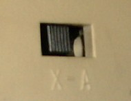

The AT keyboard adds a keyboard controller. The numeric keypad is now separated from the main keyboard. There is a single new key, with scancode 84 = 54, namely SysRq.
The protocol for AT and later keyboards differs from that for XT keyboards. Some old keyboards have an XT/AT switch on the backside that selects the appropriate protocol. Other keyboard autodetect XT or AT mode.
The KeyTronic KB101-1 keyboard has four switches of which the first two indicate the desired behaviour (00 - autodetect, 01 - unused, 10 - PC/XT, 11 - AT). Autodetect does not always work.